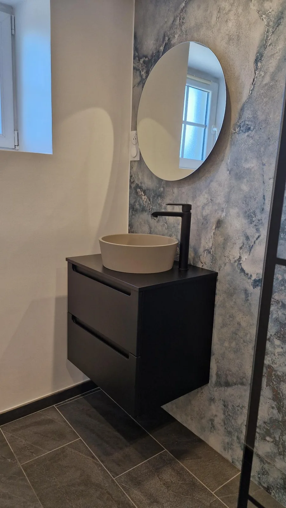

CHAUFFAGE
Pompe à chaleur
Une solution dimensionnée pour votre logement, en remplacement de votre chaudière fioul ou gaz.
Découvrir la prestationPlombier-chauffagiste à Périers
Pompe à chaleur, solaire et salle de bains. Sébastien Mauger vous accompagne, de l’étude à l’installation.


Les savoir-faire
Du chauffage à votre salle de bains, un artisan qui étudie votre besoin et réalise vos installations.
Une solution dimensionnée pour votre logement, en remplacement de votre chaudière fioul ou gaz.
Découvrir la prestationToiture ou sol, autoconsommation et stockage : une étude de dimensionnement et de rentabilité.
Découvrir la prestation
Création, rénovation, sanitaires et réseaux de plomberie pour un espace adapté à votre quotidien.
Découvrir la prestationDu travail, en images
Des installations, des détails et les étapes du chantier. Les photos du travail de msplomberie.
23 photos de chantier
Les équipements existants et les préparations sont identifiés dans les légendes. Cliquez sur une photo pour découvrir tous ses détails.

Votre artisan, tout simplement
Installé à Périers, Sébastien travaille seul et accompagne principalement les particuliers. Il étudie les besoins, dimensionne les installations et organise les travaux.
Son engagement : chercher une solution adaptée à votre logement et prendre soin de votre projet, avec la volonté de satisfaire ses clients.

Membre de la coopérative
Les Chantiers de Demain
Découvrir ma fiche
Simple, du début à la fin
Quelques informations pour comprendre votre besoin. Puis une étude et un devis adaptés à votre logement.
Parlons de votre projetVotre commune, votre besoin et quelques photos si vous le souhaitez. Sébastien peut ainsi préparer sa réponse.
Échanges, rendez-vous et dimensionnement : la solution se construit selon votre maison et vos attentes.
Un devis, les démarches utiles et l’organisation de l’installation. Un seul interlocuteur pour vous accompagner.
À vos côtés, en Normandie
Sébastien se déplace dans la Manche et le Calvados, y compris pour de grands déplacements selon le projet. Indiquez votre commune pour préparer l’échange.

Avant de se lancer
Indiquez votre commune, votre installation actuelle et ce que vous souhaitez réaliser. Quelques photos peuvent aider Sébastien à préparer un échange et un éventuel rendez-vous.
Sébastien étudie ce type de remplacement. La faisabilité et le dimensionnement dépendent du logement, de ses besoins et de l’installation existante.
Sébastien réalise l’étude de dimensionnement et de rentabilité et les déclarations préalables en mairie pour la pose en toiture. Il s’appuie sur une entreprise de couverture pour les travaux sur le toit.
L’entreprise est basée à Périers. Sébastien se déplace dans la Manche et le Calvados selon le projet, notamment à Valognes, Saint-Lô et Granville. Précisez votre commune pour préparer l’échange.
Parlons de votre projet
Sur les chantiers, Sébastien n’est pas toujours disponible au téléphone. Décrivez votre besoin : il pourra en prendre connaissance et revenir vers vous.
Une photo de votre installation ou de la pièce peut aider à mieux comprendre votre projet.
Choisissez votre projet, puis racontez-nous.
Version de présentation : aucun message n’est envoyé.
La fiche Google de msplomberie sera bientôt disponible. Vous pourrez y retrouver l’entreprise et partager votre expérience.
Consulter la fiche Google